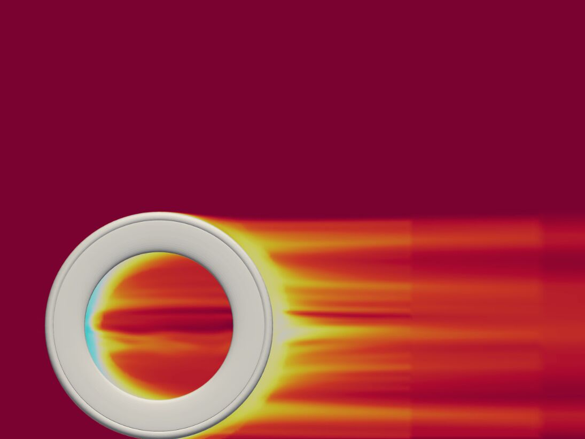

Objective
Rim profiles are frequently optimized at 0° yaw. In racing conditions, however, crosswinds expose the wheel to a range of yaw angles, and the profile with the lowest drag at 0° is not necessarily the lowest-drag profile across a race. The objective of this study was to identify which cross-section parameters most influence yaw-weighted drag at a fixed rim depth.
Parametric model
Initial iterations used elliptical profiles informed by NACA airfoil theory, with the position of maximum width varied between 30% and 50% of rim depth. These profiles converged near a maximum width of approximately 105% of tire width, consistent with current industry practice. To explore the design space more systematically, the profile was rebuilt as a spline controlled by four parameters:
Figure 2. Rim cross-section parameters (schematic, not to scale). Each candidate was named by its four parameter values.
- P1, position of maximum width: location of the widest point as a percentage of rim depth.
- P2, maximum rim width: expressed as a percentage of tire width.
- P3, shoulder spline handle length: controls the rate at which the profile narrows after the point of maximum width.
- P4, trailing-edge spline handle length: controls the profile convergence at the spoke bed.
Method
- Modeling. Each 75 mm and 95 mm candidate was modeled in SolidWorks and Fusion 360 from the four parameters, on a 28 mm tire.
- Simulation. A full yaw sweep from 0° to 20° was run for every candidate in NablaFlow AeroCloud.
- Yaw weighting. A Python script grouped drag results into eight yaw bins and weighted each bin by the proportion of race time spent at that angle. Weighted averages were computed by both nearest-neighbor and interpolation methods to confirm that the ranking did not depend on the method.
- Ranking. Weighted drag was compared across the exploratory, 75 mm, 95 mm, and disc candidate sets to quantify the influence of each parameter.


Findings
Maximum rim width (P2) was the dominant parameter, with an optimum near 115% of tire width at both depths. This is wider than the common industry value of approximately 105%.
- Yaw weighting changed the ranking. Profiles with the lowest drag at 0° were often not the lowest after yaw weighting; performance at higher yaw angles determined the final order.
- Parameter influence varied with depth. At 75 mm, P2 was clearly dominant. At 95 mm, the shoulder handle (P3) and position of maximum width (P1) together had an influence comparable to P2. The longer chord aft of maximum width on a deeper rim requires more length for pressure recovery.
- Shorter shoulder handles performed better. The shortest P3 value tested produced the lowest drag at both depths, indicating that the optimum may lie below the tested range. The practical limit is likely set by manufacturing or structural requirements.
- The trailing-edge parameter was stable. P4 showed a consistent optimum that did not change with depth.
- Balanced spline lengths performed best. Matched side and bottom spline lengths outperformed profiles in which either parameter dominated.
Drag values and candidate geometries are proprietary to Princeton Carbon Works and are not shown.
Outcomes
- Delivered a ranked set of candidate profiles and a summary of parameter sensitivities to the engineering team.
- Recommended testing shoulder handle lengths below the current minimum, subject to structural limits.
- Recommended CFD runs with trispoke wheels installed, as no trispoke data existed for the candidates.